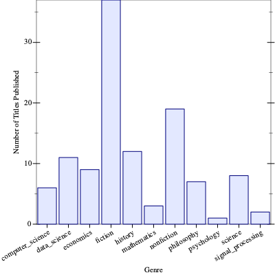

Tabular Asa
| (require tabular-asa) | package: tabular-asa |
A fast, efficient, immutable, dataframes implementation.
1 Sources
The source code can be found at https://github.com/massung/tabular-asa.
2 Quick Example
This is a brief example of loading a table from a CSV, filtering, grouping, aggregating, and plotting the data. Note: This example uses ~> from the threading module for clarity, but Tabular Asa does not require it.
(define books (call-with-input-file "books.csv" table-read/csv)) (let ([df (~> books (table-drop-na '(Publisher)) (table-cut '(Genre Title)) (table-groupby '(Genre)) (group-count))]) (parameterize ([plot-x-tick-label-angle 30] [plot-x-tick-label-anchor 'top-right]) (plot (discrete-histogram (for/list ([x (table-column df 'Genre)] [y (table-column df 'Title)]) (list x y))) #:x-label "Genre" #:y-label "Number of Titles Published")))

3 Introduction
Tabular Asa is intended to fulfill the following goals:
Be as efficient as possible sharing memory.
Be as lazy as possible; use sequences and streams.
Be usable for everyday tabular data tasks.
Be extremely simple to understand and extend.
Be flexible by exposing low-level functionality.
Be a learning example for students who want to learn how to implement databases.
Tabular Asa does this by starting with a couple very simple concepts and building on them. In order, those concepts are:
Columns.
Tables.
Indexing.
Grouping.
Aggregating.
4 Row vs. Column Major
When thinking about tabular data, it’s very common to think of each row (or record) as a thing to be grouped together. However, this is extremely inefficient for most operations; it requires extracting data from a larger collection into a smaller collection for many operations. It is also an inefficient use of cache. For this reason Tabular Asa is column-major.
A simple example of this difference in implementation would be cutting or inserting columns (a SELECT operation in SQL) to a table. Consider the following table of data:
name | age | gender |
Jeff | 23 | m |
Sam | 14 | m |
Kate | 38 | f |
When rows are stored as a sequence or hash, removing or adding a column requires duplicating every single row of data and copying it into a new sequence or hash, essentially doubling the memory usage and increasing the time it takes to perform the operation. However, if the table is stored as 3 columns, then creating a new table with a column added only adds the memory cost of the new column. Selecting a subset of columns is even easier.
Additionally, tables contain an a vector which is the index of which rows it sees. This allows for tables that are filters to simply reference the existing column data, but with a new index. In the above example table, the index would be the vector #(0 1 2). If a new table was generated by filtering the original, keeping only the girls, then the new table would contain all the same column data, but the index would be #(2).
5 Row vs. Record
For the purposes of this documentation and function names, a "row" is defined as a list? and a "record" is defined as hash?.
Likewise, the symbol k is used in place of a column name (a symbol?) and the symbol ks is used for a list of column names.
6 Reading Tables
It is important to note that - when reading tables - columns that don’t already exist will be generated on-demand. The column names will be equivelant to calling (gensym "col") to ensure they are unique symbols.
procedure
(table-read/sequence seq [columns]) → table?
seq :
(or/c (listof any/c) (sequenceof hash-eq?)) columns : (listof symbol?) = '()
procedure
(table-read/columns seq [columns]) → table?
seq : (sequenceof sequence?) columns : (or/c (listof symbol?) #f) = #f
(table-read/columns '((0 1 2) #("a" "b" "c") "def") '(col1 col2 col3))
procedure
(table-read/jsexpr jsexpr) → table?
jsexpr : jsexpr?
If jsexpr is a JSON object (hash-eq?), then it is assumed to be a hash of columns, where each column contains the values for it.
If jsexpr is a JSON array (list?), then it is assumes to be a list of hash-eq? records, where the key/value pairs are the column names and values for each row of the table.
procedure
(table-read/csv port [ #:header? header #:drop-index? drop-index #:separator-char sep #:quote-char quote #:double-quote? double-quote #:comment-char comment #:strip? strip #:na na #:na-values na-values]) → table? port : input-port? header : boolean? = #t drop-index : boolean? = #f sep : char? = #\, quote : char? = #\" double-quote : char? = #t comment : char? = #\# strip : boolean? = #f na : any/c = #f
na-values : (listof string?) = (list "" "-" "." "na" "n/a" "nan" "null")
The header argument - if #t - indicates that the first non-comment row of the CSV should be treated as the list of column names. If #f then the column names will be generated as needed.
The drop-index arugment - if #t - assumes that the first column of the CSV is the row index (i.e., an auto-incrementing integer) and shouldn’t be kept. If there is a row index column, and it is not dropped, it’s important to note that it will be treated just like any other column and is NOT used as the table’s index.
The na-values argument is a list of strings that - when parsed as the value for a given cell - are replaced with the na value to indicate N/A (not available). The values in this list are case-insensitive.
procedure
(table-read/json port [#:lines? lines]) → table?
port : input-port? lines : boolean? = #f
7 Building Tables
Tables can also be built at constructed using an instance of table-builder% or with the for/table macro.
|
superclass: object% |
constructor
(new table-builder% [ [initial-size initial-size] [columns columns] [sort-columns sort-columns]]) → (is-a?/c table-builder%) initial-size : exact-nonnegative-integer? = 5000 columns : (listof symbol?) = '() sort-columns : boolean? = #f Creates a new table-builder% with an initial shape.The initial-size is how many rows are initially reserved for each column.
The columns is the initial list (and order) of column names. Columns may be added dynamically as rows and records are appended to the table.
The sort-columns parameter makes it so that - upon building the table - the columns are sorted alphabetically. This is useful when building a table from records and you want to ensure a consistent ordering.
method
(send a-table-builder add-column name [ backfill]) → void? name : symbol? backfill : any/c = #f Appends a new column to the table being built. Any rows already added to the table will be be backfilled with backfill.Typically, this method need not be called manually, as it will automatically be called as-needed by add-row and add-record.
Appends a new row of values to the table. If ks is #f (the default), then the current set of columns (in order) of the table is assumed. If the row contains more values than there are columns then additional columns will be added to the table with generated names.
method
(send a-table-builder add-record r) → void?
r : hash-eq? Appends a new row of values to the table. The record is assumed to be a hash-eq? of (k . value) pairings. If the record contains a column name not yet present in the table, a new column is created for it.Builds a new index for the table, truncates the column data and returns it.This method may be called more than once, and each time it will return a new table. This allows you to do things like add rows, build a table, add more rows and columns, build another table, etc.
Example:
syntax
(for/table (init-forms ...) (for-clause ...) body-or-break ... body)
The init-forms are the optional, initial forms used to create a table-builder% instance.
Each iteration of body should return either a list? or hash-eq?, which will automatically be sent to the table-builder% using add-row or add-record. It’s also possible to mix and match (i.e., return a list for one iteration and a hash for another).
When the for-clause terminates, the table is built and returned.
Example:
(for/table ([initial-size 3] [columns '(hero universe)]) ([i 3]) (case i ((0) '("Superman" "DC")) ((1) '("Wolverine" "Marvel")) ((2) '("Batman" "DC"))))
8 Tables
struct
(struct table (index data) #:extra-constructor-name make-table) index : (vectorof exact-nonnegative-integer?) data : (listof (cons/c symbol? (vectorof any/c)))
All tables are also sequences and can be iterated using for, where each iteration returns the next index and row (list). For example:
(define df (table #(0 1 2) '((hero . #("Superman" "Batman" "Wonder Woman")) (gender . #(m m f))))) (for ([(i row) df]) (displayln row))
value
parameter
(table-preview) → (table? output-port? -> void?)
(table-preview proc) → void? proc : (table? output-port? -> void?)
= procedure?
#<table [359 rows x 8 cols]> |
However, if you may supply your own function, or even replace it with display-table or print-table if you always want to see a preview of the table on the REPL.
procedure
df : table?
procedure
(table-shape df) →
exact-nonnegative-integer? exact-nonnegative-integer? df : table?
procedure
(table-empty? df) → boolean?
df : table?
procedure
(table-header df) → (listof symbol?)
df : table?
procedure
(table-columns df) → (listof column?)
df : table?
procedure
(table-column df k) → column?
df : table? k : symbol?
procedure
(table-with-column df data [#:as as]) → table?
df : table? data : sequence? as : (or/c symbol? #f) = #f
If the data sequence contains fewer elements than there are rows in the table, then the extra rows will be filled with #f for the new column. Likewise, if data contains more values than there are rows, the extra values will be dropped.
It’s important to note that the vector for the column generated will be as large as necessary for it to be indexed properly by the table! For example, let’s say you begin with a table that has 1M rows and filter it, which returns a new table with a single row. If the index of that single row is 999999 (i.e., the last row), then adding a new column will create a vector with 1M entries, all but one of which will contain #f.
procedure
(table-with-columns-renamed df rename-map) → table?
df : table? rename-map : hash-eq?
(table-with-columns-renamed df #hasheq((person . name)))
procedure
(table-drop df ks) → table?
df : table? ks : (non-empty-listof symbol?)
procedure
(table-irow df i) → (listof any/c)
df : table? i : exact-nonnegative-integer?
For a more concrete example of this, imagine a brand new table with a single column of 3 value: #(a b c); it has an index of #(0 1 2). Now, reverse the table; the index is now #(2 1 0). Calling (table-irow df 2) will return '(c), because that’s the value at index 2. However, calling (table-row df 2) will return '(a), because that’s the value of the third row; the table has been reversed.
This can be seen in action easily with the following code:
(let ([df (table-reverse (table-with-column empty-table '(a b c)))]) (for ([(i row) df] [n (in-naturals)]) (displayln (format " for ~a = ~v" i row)) (displayln (format "irow ~a = ~v" i (table-irow df i))) (displayln (format " row ~a = ~v" n (table-row df n)))))
The for loop follows the index, so index 2 should be output first, which is reference row 0. The last index output is 0, which is the last reference row (2).
procedure
(table-row df i) → (list/c any/c)
df : table? i : exact-nonnegative-integer?
See the comment for table-irow for more details.
procedure
(table-record df i) → hash-eq?
df : table? i : exact-nonnegative-integer?
procedure
(table-rows df) → (sequenceof list?)
df : table?
procedure
(table-records df) → (sequenceof hash-eq?)
df : table?
procedure
(table-head df [n]) → table?
df : table? n : exact-nonnegative-integer? = 10
procedure
(table-tail df [n]) → table?
df : table? n : exact-nonnegative-integer? = 10
procedure
(table-select df flags) → table?
df : table? flags : (sequenceof any/c)
procedure
df : table? proc : ((non-empty-listof any/c) -> any/c) ks : (or/c (non-empty-listof symbol?) #f) = #f
procedure
(table-apply df proc [ks]) → table?
df : table? proc : procedure? ks : (or/c (non-empty-listof symbol?) #f) = #f
procedure
(table-filter df proc [ks]) → table?
df : table? proc : procedure? ks : (or/c (non-empty-listof symbol?) #f) = #f
procedure
(table-update df k proc [ #:ignore-na? ignore-na]) → table? df : table? k : symbol? proc : procedure? ignore-na : boolean? = #t
(table-with-column df (table-apply df proc (list k)) #:as k)
If ignore-na is #t (the default), then all #f values are returned as #f instead of being updated.
procedure
(table-fold df proc i [final]) → table?
df : table? proc : (any/c any/c -> any/c) i : any/c final : (any/c -> any/c) = identity
procedure
(table-groupby df ks [less-than?])
→ (sequence/c (listof (list/c symbol? any/c)) table?) df : table? ks : (non-empty-listof symbol?)
less-than? : (or/c (any/c any/c -> boolean?) #f) = sort-ascending
procedure
(table-drop-na df [ks]) → table?
df : table? ks : (or/c (non-empty-listof symbol?) #f) = #f
procedure
(table-reverse df) → table?
df : table?
procedure
(table-sort df [ks less-than?]) → table?
df : table? ks : (or/c (non-empty-listof symbol?) #f) = #f less-than? : (any/c any/c -> boolean?) = sort-ascending
procedure
(table-distinct df [ks keep]) → table?
df : table? ks : (or/c (non-empty-listof symbol?) #f) = #f keep : (or/c 'first 'last 'none) = 'first
procedure
(table-join/inner df other on [ less-than? #:with with]) → table? df : table? other : table? on : (non-empty-listof symbol?) less-than? : (any/c any/c -> boolean?) = sort-ascending with : (non-empty-listof symbol?) = on
procedure
(table-join/outer df other on [ less-than? #:with with]) → table? df : table? other : table? on : (non-empty-listof symbol?) less-than? : (any/c any/c -> boolean?) = sort-ascending with : (non-empty-listof symbol?) = on
9 Printing Tables
parameter
(pretty-print-rows) → (or/c exact-nonnegative-integer? #f)
(pretty-print-rows rows) → void? rows : (or/c exact-nonnegative-integer? #f)
= 10
procedure
(write-table df [ port mode #:keep-index? keep-index]) → void? df : table? port : output-port? = (current-output-port) mode : boolean? = #t keep-index : boolean? = #t
procedure
(print-table df [ port #:keep-index? keep-index]) → void? df : table? port : output-port? = (current-output-port) keep-index : boolean? = #t
procedure
(display-table df [ port #:keep-index? keep-index]) → void? df : table? port : output-port? = (current-output-port) keep-index : boolean? = #t
10 Writing Tables
procedure
(table-write/string df [port]) → void?
df : table? port : output-port? = (current-output-port)
procedure
(table-write/csv df [ port #:keep-index? keep-index #:header? header #:separator-char sep #:quote-char quote #:escape-char escape #:list-char list-sep #:double-quote? double-quote #:na-rep na #:na-values na-values]) → void? df : table? port : output-port? = (current-output-port) keep-index : boolean? = #t header : boolean? = #t sep : char? = #\, quote : char? = #\" escape : char? = #\\ list-sep : char? = #\| double-quote : boolean? = #t na : string? = "" na-values : (listof any/c) = (quote(#f))
procedure
(table-write/json df [ port #:orient orient #:lines? lines #:na-rep na]) → void? df : table? port : output-port? = (current-output-port) orient : (or/c 'records 'columns) = 'records lines : boolean? = #t na : any/c = (json-null)
If orient is 'records (the default) then every row of the table is written as an array of JSON objects. If lines is #t (and orient is 'records) then instead of an array, then each row is written as a record on each line.
If orient is 'columns then the table is written as a single JSON object, where each key/value pairing is the column name and an array of values.
The na determines what Racket value in written out as a JSON null.
11 Columns
struct
(struct column (name index data) #:extra-constructor-name make-column) name : symbol? index : (vectorof exact-nonnegative-integer?) data : (vectorof any/c)
value
empty-column : column?
procedure
(build-column data [#:as as]) → column?
data : (sequenceof any/c) as : (or/c symbol? #f) = #f
procedure
col : column?
procedure
(column-empty? col) → boolean?
col : column?
procedure
(column-compact col) → column?
col : column?
procedure
(column-rename col [as]) → column?
col : column? as : (or/c symbol? #f) = #f
procedure
(column-ref col n) → any/c
col : column? n : exact-nonnegative-integer?
procedure
(column-head col [n]) → column?
col : column? n : exact-nonnegative-integer? = 10
procedure
(column-tail col [n]) → column?
col : column? n : exact-nonnegative-integer? = 10
procedure
(column-reverse col) → column?
col : column?
procedure
(column-sort col [less-than?]) → column?
col : column? less-than? : ((any/c any/c) -> boolean?) = sort-ascending
12 Groups
procedure
(group-fold proc init group [final]) → table?
proc : (any/c any/c -> any/c) init : any/c group : (sequence/c (listof (list/c symbol? any/c)) table?) final : (any/c -> any/c) = identity
procedure
(group-count group) → table?
group : (sequence/c (listof (list/c symbol? any/c)) table?)
procedure
group : (sequence/c (listof (list/c symbol? any/c)) table?) less-than? : (any/c any/c -> boolean?) = sort-ascending
procedure
group : (sequence/c (listof (list/c symbol? any/c)) table?) greater-than? : (any/c any/c -> boolean?) = sort-descending
procedure
(group-mean group) → table?
group : (sequence/c (listof (list/c symbol? any/c)) table?)
procedure
(group-product group) → table?
group : (sequence/c (listof (list/c symbol? any/c)) table?)
procedure
(group-list group) → table?
group : (sequence/c (listof (list/c symbol? any/c)) table?)
procedure
(group-unique group) → table?
group : (sequence/c (listof (list/c symbol? any/c)) table?)
procedure
(group-nunique group) → table?
group : (sequence/c (listof (list/c symbol? any/c)) table?)
procedure
(group-sample group) → table?
group : (sequence/c (listof (list/c symbol? any/c)) table?)
13 Indexes
struct
(struct index (keys less-than?) #:extra-constructor-name make-index) keys : (vectorof (cons/c any/c (vectorof exact-nonnegative-integer?))) less-than? : (or/c ((any/c any/c) -> boolean?) #f)
procedure
(build-index data [less-than?]) → index?
data : (sequenceof any/c)
less-than? : (or/c ((any/c any/c) -> boolean?) #f) = sort-ascending
value
procedure
(index-scan-keys ix [#:from from #:to to]) → sequence?
ix : index? from : any/c = #f to : any/c = #f
If the index is not sorted then the order of the sequence returned is undefined.
procedure
(index-scan ix [#:from from #:to to]) → sequence?
ix : index? from : any/c = #f to : any/c = #f
procedure
ix : index?
procedure
(index-empty? ix) → boolean?
ix : index?
procedure
(index-sorted? ix) → boolean?
ix : index?
procedure
(index-find ix key [exact]) → (or/c exact-nonnegative-integer? #f)
ix : index? key : any/c exact : boolean? = #f
If key is found, then the reference index to the keys is returned. When not found, if exact is #t then #f is returned. Otherwise, the next higher index for the next key is returned.
procedure
(index-member ix key)
→ (or/c (list/c any/c exact-nonnegative-integer? ...) #f) ix : index? key : any/c
procedure
(index-ref ix n) → (list/c any/c exact-nonnegative-integer? ...)
ix : index? n : exact-nonnegative-integer?
procedure
ix : index? v : (vectorof any/c) from : any/c = #f to : any/c = #f
procedure
(index-median ix) → (or/c any/c #f)
ix : index?
procedure
(index-mode ix) → (or/c any/c #f)
ix : index?
14 Sort Ordering
All functions that allow for sorting (e.g. table-sort) or indexing/grouping take an optional less-than? compare function. Tabular Asa comes with a generic orderable interface with sort-ascending and sort-descending functions for the following basic types:
Boolean
Number
String
Char
Symbol
Sequence
Date
Both generic functions will always sort #f values last regardless of sort direction.
procedure
(sort-ascending a b) → boolean?
a : orderable? b : any/c
procedure
(sort-descending a b) → boolean?
a : orderable? b : any/c
procedure
(orderable? x) → boolean?
x : any/c